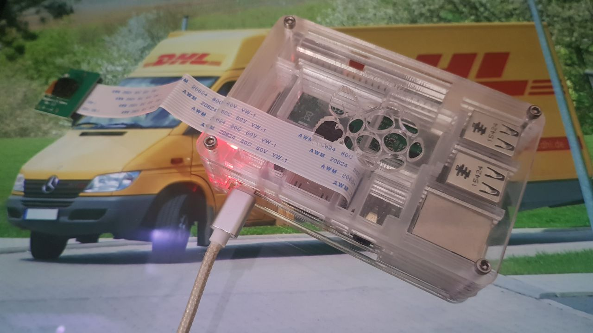

Dank unserer Anwedung wird nie wieder ein Paket verpasst, weil der Postbote die Tür nicht finden konnte. Wir nutzen Computer Vision, um DHL-Autos zuerkennen, die vor der Wohnung halten. Sobald erkannt wird, dass ein DHL-Lieferant hält, ertönt das Geräusch eines historischen Posthorns und man kann dem Boten helfen, die Tür zu finden.
Show Code"DeliveryDetector" nutzt die historischen Posthornklänge aus dem Albert-Hiller-Datensatz, um den Nutzer auf DHL-Autos vor seiner Wohnung hinzuweisen. Lieferanten haben nur wenig Zeit alle Pakete auszuliefern. Da ist es kein Wunder, dass sie nicht lange die Haustür suchen können. Bei verwinkelten Wohnsituationen geht da schnell ein Paket in den Paketshop statt nach Hause, obwohl man selbst da war. Unsere Anwendung soll das verhindern. Wir haben ein Programm entwickelt, dass auf einem Raspberry Pi (einem kleinen Computer) laufen kann. Mit einer Kamera ausgestattet, kann dieser haltende DHL-Autos erkennen und den Nutzer mit dem Klang eines Posthorns darauf hinweisen. Für den Computer-Vision-Teil des Projektes nutzen wir OpenCV und eine selbst trainierten HAAR Classifier, der die Videodaten in Echtzeit analysiert. Damit bemerkt der Nutzer die Ankunft des Lieferanten und kann ihm entgegenkommen, wenn dieser mal die Haustür nicht findet.
Raspberry Pi 3 mit Kameramodul zur Erkennung von DHL-Autos und Abspielen von historischen Posthornklängen:
